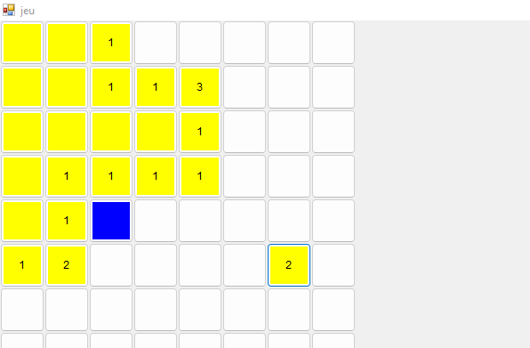
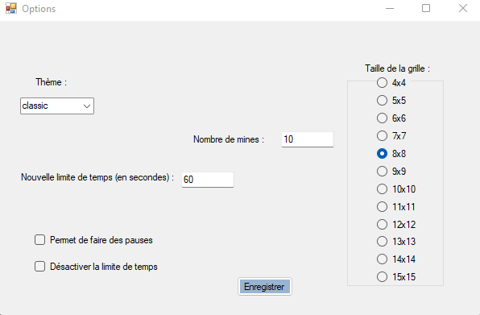
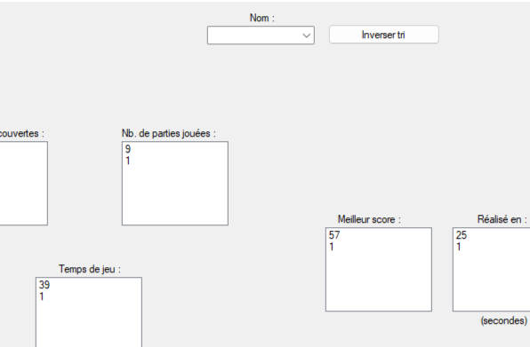
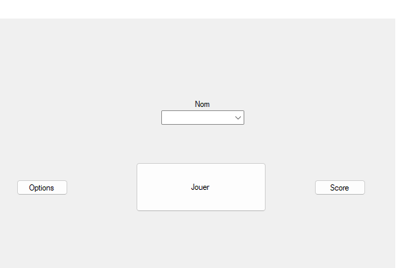

Site Web réalisé par Adrien Deü Liens utiles :
Bonjour et bienvenue sur mon portfolio ! Je m'appelle Adrien Deü et je suis actuellement étudiant à l'IUT Paris - Rives de Seine en deuxième année de BUT informatique. Je répertorie sur cette page web une liste non exhaustive de projets informatiques que j'ai eu l'occasion de réaliser ainsi que quelques informations sur ces projets. Bonne visite !
Projet réalisé en début de deuxième année de BUT en HTML/CSS et JavaScript, il s'agit de la refonte d'un site de l'agglomération Privas Centre Ardèche avec une maquette et un design repensé. Ce travail réalisé en équipe m'a permis de me familiariser avec github pour travailler à distance sur un même site mais également faire du versioning.
Ce projet réalisé dans le cadre du module d'IHM de fin de première année de BUT en langage VB.net a consisté en l'implémentation d'un démineur avec personnalisation de la grille, des couleurs, du niveau de difficulté, mais aussi paramètrage d'un temps imparti par l'utilisateur. De plus, un menu permet d'afficher les scores de chaque joueur connu par le programme.
Partie
Menu d'options
Menu des scores
Accueil
Projet réalisé en fin de première année de BUT en Python et SQL, il s'agit de l'exploitation statistique d'une base de données stockant des informations sur les clients d'une chaîne de magasins. J'ai notamment extrait des graphiques avec python à partir de ces données comme cette illustration qui montre le nombre de personnes dans les foyers des cliens par ville.
Projet réalisé en JAVA en fin de première année, il s'agit de deux algorithmes de calcul du plus court chemin d'un graphe entre une source et une destination via les algorithmes de Dijkstra et de Bellman. Les graphes sont représentés par des listes ou des matrices d'adjacence. Des exceptions sont également prises en compte telles que la tentative de calcul de PCC avec Bellman d'un graphe avec circuit qui déclenche une exception spécifique.
Projet réalisé en JAVA en première année, il s'agit de l'implémentation du jeu de cartes '6-Qui-Prend !'. Ce projet m'a permis de découvrir la programmation orientée objet ainsi que de découvrir le langage JAVA.